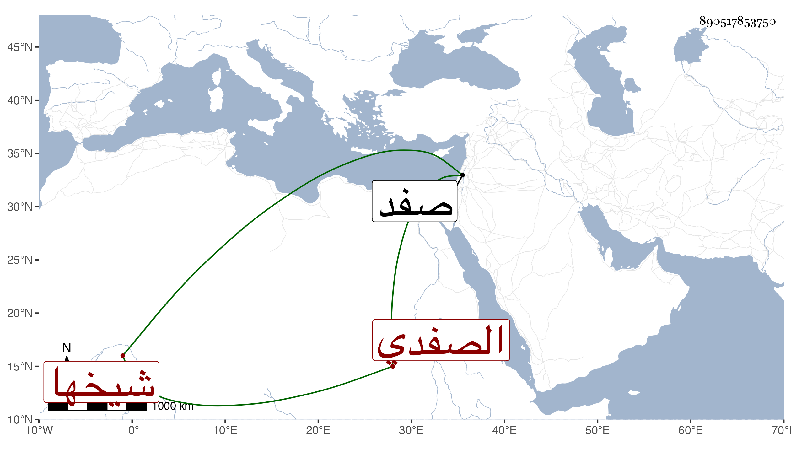

0902Sakhawi.DawLamic.ITO20230111-ara1.EIS1600.890517853750
Biography ID: 890517853750
أحمد بن خفاجا الشهاب الصفدي شيخها وزاهدها كان جيدا صالحا خيرا زاهدا عابدا قانتا لأهل بلده فيه اعتقاد كبير سيما وهو لا يقبل لأحد شيئا وكان في أول أمره حائكا ثم تركها وتقنع بكروم له . مات بعد أن عمر طويلا بصفد في سابع عشر رجب سنة خمسين .
